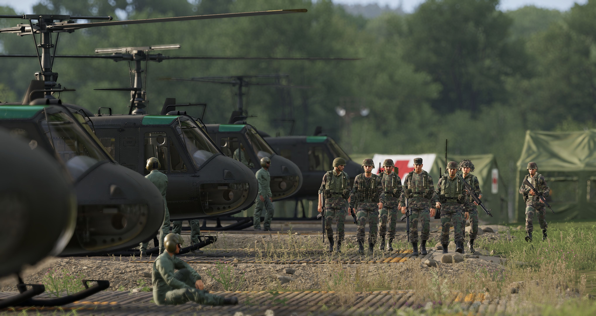

Main Operating Base
Project Overview
Tactical Application Group (TAG) is a gaming community dedicated to strategic and tactical gameplay across various platforms and genres. TAG brings together like-minded gamers who value teamwork, communication, and skillful execution in their gaming endeavors. This project aims to create a comprehensive online platform that serves as the central hub for TAG members, facilitating communication, coordination, and community building.